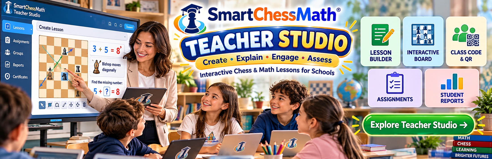

Interactive Lesson Builder
A signed-in teacher prepares a lesson on a chessboard, including piece moves, number values, and geometry paths such as squares, diamonds, and other shapes.

Create • Explain • Engage • Assess
Bring Chess and Mathematics Together in Your Classroom.
SmartChessMath Teacher Studio helps teachers prepare interactive lessons, explain mathematical concepts using chessboards and chess pieces, organize classroom activities, and review student learning progress. It is designed for teachers, schools, and educational institutions.
A signed-in teacher prepares a lesson on a chessboard, including piece moves, number values, and geometry paths such as squares, diamonds, and other shapes.
Lessons can show legal moves, hints, and piece movement so a teacher can explain an idea visually. Students do not need their own account to take part.
Students join an activity with the short class code, a join link, or the class QR card from the teacher. There is no student password.
A teacher can create an assignment from a lesson. Students receive that saved assignment, so later edits to the lesson do not change it.
Assignment activity is kept for the teacher to review. This page does not show any student names or results.
Teacher Studio is for organized classroom use. Teachers sign in. Open public registration is not offered. This platform is separate from SmartChessMath Live.